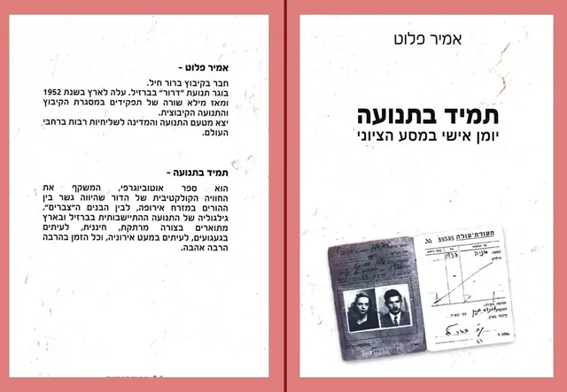

סצנה 01
ברזיל
סוניה נולדה בבאטאטאיס, אמיר היה פעיל בתנועה — שני מסלולים שהובילו אל אותו סיפור משותף.
סוניה פלוט ז״ל: 12.6.1933–27.5.2025 · אמיר פלוט ז״ל: 7.7.1926–1.4.2025
קולנוע זיכרון
סיפור חיים כמו סרט משפחתי: מעברים, שורשים, קהילה, ובמרכז — זוגיות שהשאירה אחריה אור וערכים.

חיים שלמים בפריים אחד
סוניה ואמיר פלוט ז״ל
פריימים מהחיים


הפרקים
סצנה 01
סוניה נולדה בבאטאטאיס, אמיר היה פעיל בתנועה — שני מסלולים שהובילו אל אותו סיפור משותף.
סצנה 02
בשנת 1952 עלו ארצה עם הגרעין השלישי לברור חיל, מתוך אמונה בבנייה, בשותפות ובחיים של קהילה.
סצנה 03
תקופת הכשרה, מעבר והסתגלות — לפני שהדרך הגיעה אל בית הקבע.
סצנה 04
הגעה לקיבוץ, קבלת פנים חמה, ומשפחה שהלכה ונבנתה בתוך קהילה.
סצנה 05
הסיפור ממשיך דרך הילדים, הנכדים, החברים, הקהילה והערכים שמחזיקים את נוכחותם קרובה.

״יש אנשים שהבית שלהם ממשיך להאיר גם אחרי שכבר אינם בו.״
לזכר סוניה ואמיר — באהבה, בכבוד ובהכרת תודה על חיים של משפחה, שייכות וקהילה.